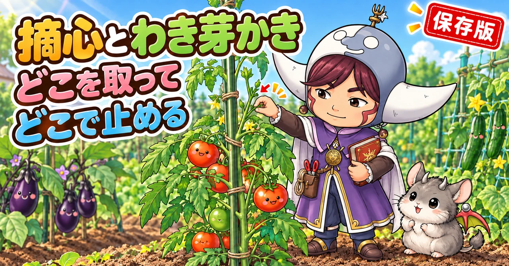

摘心とわき芽かきの決定版｜トマト・なす・きゅうり・すいか・かぼちゃ・しそ、どの芽を取ってどこで止めるか

📖 この記事の目次
この記事で分かること
- 摘心は、茎やつるの先（成長点）を摘み取って、それ以上伸びないように止める作業です。わき芽かき（芽かき）は、葉のつけ根から出てくる余分な芽を取る作業です。この2つで枝やつるの数を整えることを、整枝と言います。
- 目的は、栄養を実に集める、風通しをよくして病気を防ぐ、株の形を整えて作業しやすくする、の3つです。しそやモロヘイヤのように、摘心してわき芽を増やし、収穫量を増やす野菜もあります。
- トマトは、主茎を1本伸ばし、わき芽はすべて取る「1本仕立て」が基本です。なすは、主枝と一番花のすぐ下のわき芽2本を残す「3本仕立て」が基本です。
- きゅうりは、親づるの下から30cmほど（本葉5〜6枚）までのわき芽や花をすべて取ります。すいかやかぼちゃは、親づるを早めに摘心して、子づるを何本か伸ばします。
- わき芽は、5cmくらいの小さいうちに、晴れた日の午前中に手で摘みます。切り口が早く乾き、病気が入りにくくなります。
トマトの苗を植えたら、どれがわき芽なのか分からず、葉っぱを取ってしまった。なすの芽かきで、残すはずの枝まで取ってしまった。きゅうりのつるが伸び放題になって、ネットの中がジャングルのようになった。摘心やわき芽かきは、野菜によってやり方がちがい、迷いやすい作業です。
この記事では、摘心とわき芽かきの意味と目的から、わき芽の見分け方、作業のこつ、野菜ごとの具体的なやり方、よくある失敗まで、順番に書いていきます。
早見：用語と、野菜ごとのやること
用語
- 摘心（てきしん）：茎やつるの先の、これから伸びる部分（成長点）を摘み取る
- わき芽かき（芽かき）：葉のつけ根から出てくるわき芽を取る
- 整枝（せいし）：摘心やわき芽かきで、枝やつるの数や形を整える
- 下葉かき（摘葉）：古くなった下のほうの葉や、病気の葉を取る
- 仕立て：何本の枝やつるを伸ばして育てるかの形。1本仕立て、3本仕立てなど
野菜ごとのやること
- トマト：わき芽をすべて取り、主茎1本で育てる（1本仕立て）
- なす：主枝と、一番花のすぐ下のわき芽2本を残し、それより下のわき芽は取る（3本仕立て）
- ピーマン：一番花の下から出る元気な枝を残し、それより下のわき芽は取る
- きゅうり：親づるの下から30cmほどまでのわき芽と花を取る。子づるは葉2枚で摘心する
- すいか：親づるを本葉5枚ほどで摘心し、子づるを3〜4本伸ばす
- かぼちゃ：親づるを本葉4枚ほどで摘心し、子づるを3本ほど伸ばす（放任でも育つ）
- オクラ：下のほうのわき芽を取り、収穫した実の下の葉を取る
- しそ、モロヘイヤ：先端を摘んで収穫し、わき芽を増やす
- じゃがいも：芽を2〜3本に減らす（芽かき）
- にんにく：1か所から2本以上芽が出たら、1本にする

作業の前に用意するもの
- はさみ：大きくなったわき芽や、摘心に使う。よく切れるもの
- アルコールなどの消毒液と布：はさみをふくため
- 手袋：トマトの茎や葉にふれると、手が黄色っぽく染まることがある
- 袋：取ったわき芽や、病気の葉を入れて持ち帰るため
- 誘引ひも：芽かきのついでに、伸びた茎を支柱やネットにとめるため
芽かきと誘引は、同じ日にまとめて行うと効率的です。わき芽を取って株がすっきりすると、誘引もしやすくなります。
はじめての人が、まず覚える3つ
たくさんの野菜のやり方を一度に覚えるのは大変です。家庭菜園でよく育てる3つの夏野菜について、次の3つだけ、まず覚えておくと安心です。
- トマト：葉のつけ根から出るわき芽は、すべて取る（1本仕立て）
- なす：一番花のすぐ下のわき芽2本と主枝を残し、それより下のわき芽は取る（3本仕立て）
- きゅうり：下から30cmほどまでのわき芽と花は、すべて取る
この3つができれば、夏野菜の整枝の基本は身につきます。ほかの野菜は、育てるときにこの記事の該当するところを読み返してください。
なぜ摘心やわき芽かきをするのか
1. 栄養を実に集める
わき芽をそのまま伸ばしておくと、わき芽にも葉や花がつき、栄養がたくさんの枝に分かれてしまいます。すると、ひとつひとつの実に栄養が行きわたらず、実が小さくなったり、数が減ったりします。わき芽を取ると、栄養が残した枝の実に集まります。
2. 風通しをよくする
枝やつるが混みあうと、株の中に風が通らず、湿気がこもります。病気が出やすくなり、虫も増えます。整枝をして枝の数を減らすと、風通しと日当たりがよくなります。
3. 株の形を整えて、作業しやすくする
枝やつるが伸び放題になると、どこに実がなっているか分からなくなり、収穫や見回りが大変になります。仕立てを決めて整枝すると、支柱やネットへの誘引もしやすくなります。
4. わき芽を増やして、収穫を増やす
しそやモロヘイヤ、バジルなど、葉や茎の先を食べる野菜は、先端を摘むと、その下からわき芽が次々に伸びてきます。摘心しながら収穫すると、収穫できる芽が増えていきます。
5. 早く実をならせる
なすやピーマンは、余分なわき芽を取ると、栄養が残した枝に集まり、背丈が伸びて、早めに実を収穫できるようになります。
わき芽の見分け方
わき芽は、茎と葉のつけ根のあいだから出る
わき芽は、主茎（まっすぐ上に伸びる太い茎）と、葉のつけ根のあいだの、すき間から出てきます。葉の柄（葉柄）そのものではなく、茎と葉柄のあいだにはさまれるように出ているのが、わき芽です。
わき芽には、先に伸びる芽がある
わき芽は、先端に小さな芽（成長点）があり、これから伸びていきます。葉は、それ以上伸びることはありません。迷ったら、先端に芽があって伸びそうなのがわき芽、と考えます。
トマトは、花のついている茎が主茎
トマトでは、花のかたまり（花房）がついている太い茎が、主茎です。主茎の葉のつけ根から出ているのがわき芽です。花房は、葉のつけ根ではなく、茎の途中から出ているので、わき芽とまちがえないようにします。
葉を取ってしまわないように
慣れないうちは、わき芽ではなく、本葉を取ってしまう失敗がよくあります。本葉を取ると、栄養を作る葉が減ってしまいます。取る前に、それが葉のつけ根の「あいだ」から出ているかどうかを確かめます。
作業のこつ
晴れた日の午前中に
わき芽を取ったり摘心したりしたあとの切り口は、傷口です。切り口が早く乾かないと、そこから病気が入ることがあります。晴れた日の午前中に作業すると、昼までに切り口が乾きます。雨の日や、雨の前日は避けます。
小さいうちに、手で摘む
わき芽は、5cmくらいまでの小さいうちなら、指でつまんで横に倒すようにすると、簡単に取れます。切り口も小さく、早く乾きます。
大きくなったら、はさみで
わき芽が大きく太くなってしまうと、手で取ろうとしたときに、主茎の皮まではがれて、傷口が広がることがあります。大きくなったわき芽は、消毒したはさみで、つけ根から切ります。
はさみは、株ごとにふく
病気の株を切ったはさみで、ほかの株を切ると、病気を広げてしまうことがあります。はさみは、使う前と、株を移るたびに、アルコールなどでふきます。手で摘む場合も、病気の株をさわったら、手を洗ってから次の株に移ります。
こまめに見回る
夏になって気温が上がると、わき芽は1週間で驚くほど大きくなります。週に1〜2回は見回って、小さいうちに取るようにします。
成長点の近くは、あわてて取らない
株の先端の成長点のすぐそばに出てきたわき芽は、あわてて取ろうとすると、成長点まで傷めてしまうことがあります。成長点を傷めると、茎の先が変形したり、2本に分かれたりします。先端近くのわき芽は、少し育って見分けやすくなってから取ります。
株が弱っているときは、控えめに
暑さや病気で株が弱っているときに、わき芽や葉を一度にたくさん取ると、さらに弱ってしまいます。弱っているときは、作業を控えめにし、株が元気を取り戻してから少しずつ整えます。
梅雨どきは、晴れ間を待つ
栽培の本には「わき芽は早め早めに取りましょう」と書いてあるので、雨の日でも取ってしまう人がいます。けれども、薬を使わずに育てている場合は特に、雨の日やくもりの日に無理に取らず、晴れた日の午前中まで待つほうが安心です。わき芽が少し大きくなっても、はさみを使えば取れます。傷口から病気を広げるほうが、ずっと痛手になります。
接ぎ木苗の、台木から出る芽
接ぎ木苗は、病気に強い別の植物（台木）の根に、育てたい野菜をつないだ苗です。つないだところより下の台木から芽が出てくることがあります。この芽は、育てたい野菜ではないので、見つけたらすぐに取ります。取ってもまた出てくるので、見つけるたびに取ります。台木の子葉（最初に出た小さな葉）も取っておきます。

見回りの手順
1. 株元から順に見る
株元から上へ向かって、葉のつけ根を1つずつ見ていきます。わき芽を見つけたら、その場で摘みます。
2. 下葉を確かめる
黄色くなった葉や、地面にふれている葉があれば取ります。
3. 誘引する
伸びた茎やつるを、支柱やネットにとめます。茎をひもできつくしばると、太くなったときに食いこむので、8の字にゆるく結びます。
4. 虫と病気を見る
葉の裏や新芽に、アブラムシなどがついていないか、葉に病気の斑点が出ていないかを見ます。
5. 先端の伸びを見る
支柱やネットの上まで届いていたら、摘心を考えます。
トマトのわき芽かき
基本は1本仕立て
トマトは、主茎を1本まっすぐ上に伸ばし、葉のつけ根から出るわき芽をすべて取る「1本仕立て」が基本です。わき芽を伸ばすとそこにも実がつきますが、実が小さくなり、枝が混みあって管理が大変になります。
植えつけ直後の芽かきは、あわてない
植えつけたばかりのころは、まだ株が小さく、根も張っていません。最初の芽かきはあわてず、株が根づいて伸びはじめてから行います。
花房の向き
トマトの花房は、同じ向きに出てくる性質があります。最初の花房が通路側を向くように苗を植えると、そのあとの花房も通路側にそろい、収穫やわき芽かきがしやすくなります。
ミニトマト、中玉トマト
ミニトマトや中玉トマトも、1本仕立てが基本です。勢いが強い品種は、わき芽が次々に出てくるので、こまめに取ります。
摘心のタイミング
トマトは、支柱の高さまで伸びたら、いちばん上の花房の上に葉を2枚ほど残して、主茎の先を摘心します。これ以上は伸ばさず、残った花房の実に栄養を集めます。
2本仕立て
慣れてきたら、一番花房のすぐ下から出る元気なわき芽を1本だけ残して伸ばし、主茎と合わせて2本で育てる方法もあります。収穫量が増えると言われますが、枝が重くなって支柱で支えきれなくなったり、枝が折れたりすることもあるので、はじめは1本仕立てがおすすめです。
取ったわき芽で、苗を増やす
元気なわき芽を10cmほどの長さで取り、水にさしておくと、数日から1週間ほどで根が出てきます。これを土に植えると、新しい苗として育てることができます（挿し木）。
トマトの一番果は、取らずに育てる
なすやピーマン、きゅうりは、株を育てるために最初の実を早めに取ることがありますが、トマトはちがいます。トマトは勢いが強いので、一番花についた実はしっかり育てて収穫します。最初の実をつけることで、2段目、3段目の花房にも次々と実がつきやすくなる、と言われます。一番花が咲くころには、株も大きくなってくるので、2mほどの本支柱に切りかえて、しっかり誘引しておきます。
伸び放題になってしまったら
しばらく見回れずに、わき芽が伸び放題になって、どれが主茎か分からなくなることがあります。そんなときは、株元からたどっていくと、主茎が見つかります。主茎が分かったら、主茎以外の太く伸びた枝を、消毒したはさみで、晴れた日に何回かに分けて切っていきます。一度に全部切ると株が弱るので、何日かに分けます。
なすのわき芽かき
基本は3本仕立て
なすは、まっすぐ伸びる主枝と、一番花のすぐ下から出る元気なわき芽2本、合わせて3本の枝を伸ばす「3本仕立て」が基本です。
手順
- まず、一番花がどこに咲いているかを確かめます
- 一番花のすぐ下から出ている、わき芽2本を確かめます。この2本は取りません
- それより下から出ているわき芽は、すべて取ります
- 一番花は、咲いて実がついたら、小さいうちに摘み取ります
いちばん大切なのは、取る前に一番花の位置を確かめることです。先に一番花を取ってしまうと、どこが残す芽か分からなくなります。一番花は、残す芽を決めてから、最後に取ります。
一番果を取る理由
株がまだ小さいうちに最初の実を大きくすると、株に負担がかかり、その後の育ちが悪くなります。一番果を小さいうちに取ると、そのぶんの栄養で株が大きく育ち、長くたくさん収穫できるようになります。
4本仕立てにすることも
一番花の上から、勢いのよいわき芽が出てきた場合は、それを残して4本仕立てにする方法もあります。反対に、一番花の下のわき芽を誤って取ってしまったら、一番花の上の元気なわき芽を代わりに残せば、3本仕立てにできます。
なすの下葉かき
なすは、葉が大きく、株の下のほうが混みあいやすい野菜です。実がつきはじめたら、株元の古い葉や、地面にふれている葉を取り、風通しをよくします。泥はねで葉に病気がつくのも防げます。
ピーマンのわき芽かき
ピーマンも、一番花の下から出る元気な枝を2〜3本残し、それより下から出るわき芽は取ります。下のほうのわき芽を早めに取ると、株元の風通しがよくなり、上の枝が勢いよく伸びます。ピーマンはなすより枝が細かく分かれるので、伸ばす枝以外の細かい枝が混みあってきたら、適宜整理します。
ピーマンの一番果
ピーマンも、株がまだ小さいうちについた一番果は、小さいうちに取ると、株の育ちがよくなります。株が大きく育ってからは、実をこまめに収穫して、株に負担をかけすぎないようにします。
きゅうりの整枝
下のほうのわき芽と花を取る
親づるの、本葉5〜6枚目まで、高さで言うと下から30cmほどまでのわき芽（子づる）や、雄花、雌花は、すべて取ります。すでに小さな実がついていても取ります。下のほうに実がつくと、地面にふれて曲がった実になりやすく、風通しも悪くなります。また、育ちはじめに実をたくさんつけると、株に負担がかかり、長く収穫できなくなります。
親づるは、そのまま伸ばす
親づるは、摘心せずに、ネットにそってまっすぐ上に伸ばすのが基本です。ネットのいちばん上まで届いたら、先を摘心します。
子づるは、葉2枚で摘心
本葉6枚目より上から出た子づるには、実がつきます。子づるは、葉を2枚残して先を摘心します。こうすると、子づるの実に栄養が集まり、つるが混みあうのも防げます。
すき間があれば、伸ばしてもよい
ネットにすき間があって、まわりの株とぶつからないなら、子づるをある程度伸ばしてもかまいません。孫づるにも実がつきます。混みあってきたら摘心する、という考え方で十分です。ネットのない方向へ伸びる子づるは、地面をはうようになるので、早めに摘心します。
すいか、かぼちゃ、メロンの摘心
すいか
親づるを本葉5枚ほどで摘心すると、葉のつけ根から子づるが伸びてきます。子づるを3〜4本伸ばし、そこに実をつけます。それ以外のわき芽は取ります。
かぼちゃ
かぼちゃは、つるを放任しても育ちますが、場所が限られる家庭菜園では整枝したほうが管理しやすくなります。親づるを本葉4枚ほどで摘心すると、子づるが3本ほど伸びてきます。それ以上はあまり伸びないので、あとはほぼ放任でもかまいません。親づるを1本だけ伸ばす方法や、親づると子づる1本の2本で育てる方法もあります。
植える前でも、植えてからでも
すいかやかぼちゃの親づるの摘心は、植えつける前の苗のうちに行っても、植えてからまだ小さいうちに行っても、どちらでもかまいません。
メロン
すいかと同じように、親づるに葉が5〜6枚ついたころに先端を摘心して、子づるを伸ばします。あとはあまりいじらず、つるを自由に伸ばして育てます。ビニールトンネルで育てている場合は、花が咲くころにすそを少し開けておくと、ハチなどが中に入って受粉を助けてくれます。
そのほかの野菜
ミニトマトのプランター
プランターで育てるミニトマトも、1本仕立てが基本です。プランターは土の量が少なく、わき芽を伸ばしすぎると栄養が足りなくなりやすいので、畑よりもこまめにわき芽を取ります。支柱の高さまで伸びたら、先端を摘心して、上へ伸びるのを止めます。
オクラ
下のほうから出るわき芽は、取ったほうが風通しがよくなります。わき芽にも実がつくので、たくさん収穫したい場合は、下ではなく上のほうから出たわき芽を伸ばします。また、収穫が始まったら、収穫した実のすぐ下の葉を1枚残して、それより下の葉を取ります（下葉かき）。育ちはじめや、株の勢いが弱いときは、葉を2枚残します。
しそ、バジル
葉をつまんで収穫するのではなく、茎の先端をはさみで切って収穫します。すると、切ったすぐ下の葉のつけ根から、わき芽が2本伸びてきます。わき芽が伸びたら、またその先を切って収穫します。これをくり返すと、枝の数がどんどん増えて、たくさん収穫できるようになります。
モロヘイヤ
わき芽が15〜20cmに伸びたら、先端の新しい芽を残すようにして、その上を切って収穫します。主茎は、放っておくと人の背丈ほどにもなるので、ある程度の高さになったら、先端から15〜20cmほどのところで摘心します。摘心した先も食べられます。
えだまめ
株が大きく育って葉が茂りすぎる場合、先端を摘心すると、わき芽が伸びて実のつく場所が増える、と言われます。ただし、株の勢いが弱いときは行いません。
じゃがいも
芽が10cmほどに伸びたら、元気な芽を2〜3本残して、ほかの芽を取ります。株元の土を手で押さえながら引き抜くと、種芋ごと抜けるのを防げます。
にんにく
1つの片から、2本以上の芽が出てくることがあります。そのままにすると、玉が分かれて小さくなるので、大きいほうの芽を1本残し、もう一方を根元からはさみで切ります。晴れた日に、消毒したはさみで行います。

下葉かきのしかた
なぜ下の葉を取るのか
株が育ってくると、下のほうの葉は、上の葉の陰になって日が当たらなくなり、古くなって黄色くなっていきます。こうした葉は、栄養をあまり作らないうえ、株元の風通しを悪くし、泥はねで病気がつく場所にもなります。下葉を取ると、株元の風通しがよくなり、病気の予防になります。
取ってよい葉
- 黄色くなった葉、枯れた葉
- 病気の斑点が出た葉
- 地面にふれている葉
- 実が収穫し終わった段より下の葉（トマト、オクラなど）
一度に取りすぎない
緑色の元気な葉を一度にたくさん取ると、栄養を作る力が落ちて、株が弱ります。下から少しずつ、何回かに分けて取ります。株の勢いが弱いときは、取る葉を少なめにします。
病気の葉は袋に
病気の斑点が出た葉は、取ったら袋に入れて畑の外へ出します。畑に置いておくと、そこから病気が広がることがあります。
仕立てと支柱の関係
トマト
1本仕立てなら、2mほどの支柱を株ごとに1本立て、主茎をそこに誘引していきます。2本仕立てなら、支柱を2本立てるか、斜めに立てた支柱にそれぞれの枝を誘引します。
なす、ピーマン
3本仕立てなら、主枝を中央の支柱に、2本の枝を左右に斜めに立てた支柱に誘引します。中央の支柱1本だけにして、左右の枝はひもで吊るように支える方法もあります。
きゅうり
支柱を立ててネットを張り、親づるをネットにそって上へ誘引します。子づるは、ネットにからませるようにして横へ広げます。
すいか、かぼちゃ
地面をはわせて育てる場合は、伸ばす子づるの向きをそろえて、つる同士が重ならないように並べます。場所が狭い場合は、ネットや支柱に立ち上げて育てることもできます。
季節ごとにやること（一般的な地域の目安）
- 4〜5月：トマト、なす、ピーマン、きゅうりの植えつけ。根づいたら最初の芽かき。なすは一番花を確かめて3本仕立てに。きゅうりは下のわき芽と花を取る。じゃがいもの芽かき。にんにくは、とう（花の茎）が伸びてきたら摘む
- 5〜6月：すいか、かぼちゃの親づるを摘心。トマトのわき芽は週に1〜2回見回る
- 6〜8月：わき芽が一気に伸びる時期。こまめに見回る。きゅうりの子づるの摘心。しそやモロヘイヤは摘心収穫
- 7〜9月：トマトの主茎が支柱の高さに届いたら摘心。オクラの下葉かき
- 10〜11月：にんにくの芽が2本出ていたら、草丈10〜15cmのころに1本にする（芽かき）
説明が分かれるところ
トマトは2本仕立てのほうが得か
2本仕立てにすると、収穫量が増えると言われます。一方で、枝が重くなって支柱が倒れたり、枝が折れたり、葉が混みあって病気が出やすくなったりする心配もあります。慣れないうちは1本仕立てで、慣れてきたら2本仕立てを試す、という順番がおすすめです。
きゅうりの子づるは、必ず摘心するか
子づるを葉2枚で摘心すると、形のよい実がたくさんとれる、とされます。一方で、ネットにすき間があれば、ある程度は放任で伸ばしても、孫づるにも実がついて収穫できる、という考え方もあります。混みあいすぎないことを目安に、加減します。
親づるを摘心するかどうか
きゅうりの親づるを途中で摘心して子づるを2本伸ばす方法もありますが、収穫量はそれほど変わらない、という声もあります。家庭菜園では、親づるをそのまま伸ばす方法が分かりやすいでしょう。
わき芽を取る大きさ
わき芽は、5cmくらいで取るのがよい、という説明が多く見られます。一方で、小さすぎるうちは取りにくく、まちがえて成長点や花房を取ってしまう心配もあるので、見分けがつく大きさになってから取ればよい、という考え方もあります。いずれにしても、太く大きくなりすぎる前に取ることが大切です。
なすの一番果は、必ず取るべきか
株を育てるために、一番果は小さいうちに取ったほうがよい、とされます。一方で、株が十分に大きく育っていて勢いがあれば、一番果を取らずに収穫しても問題ない、という考え方もあります。植えつけて間もない小さな株に実がついたら取り、株が大きく元気なら残す、と株の様子で判断するのもひとつの方法です。
よくある失敗
わき芽ではなく、本葉を取った
栄養を作る葉が減ってしまいます。取る前に、茎と葉のつけ根の「あいだ」から出ているかを確かめます。
わき芽が大きくなりすぎてから取った
手で取ると主茎の皮がはがれ、傷口が大きくなります。週に1〜2回見回って、小さいうちに取ります。大きくなったら、消毒したはさみで切ります。
雨の日に芽かきをした
切り口が乾かず、病気が入りやすくなります。晴れた日の午前中に行います。
なすの一番花を先に取って、残す芽が分からなくなった
一番花の位置を確かめて、残す芽を決めてから、最後に一番花を取ります。
成長点まで傷めた
先端近くのわき芽をあわてて取ろうとして、成長点を折ってしまうことがあります。先端近くは、わき芽が見分けやすくなってから取ります。
きゅうりの下のほうの実を、そのまま育てた
地面にふれて曲がった実になりやすく、株にも負担がかかります。下から30cmほどまでの実や花は取ります。
よくある質問
かぼちゃのつるを、全部切りそろえた
かぼちゃやすいかは、残した子づるの葉が実を育てます。つるを短く切りすぎると、葉が足りなくなり、実が大きくなりません。伸ばすつるは決めた本数だけ残し、それ以外のわき芽を取ります。
しその葉だけをつまんで収穫した
葉だけを取っていると、茎が上へ伸びるばかりで、わき芽が増えません。先端を茎ごと切って収穫すると、わき芽が伸びて収穫が増えます。
一度にたくさんの葉を取りすぎた
株が弱り、実の育ちも悪くなります。下葉かきは、少しずつ何回かに分けて行います。
わき芽を取り忘れて、大きな枝になってしまいました
そのまま伸ばして、その枝にも実をならせることもできます。混みあいすぎるなら、消毒したはさみで切ります。切るのは晴れた日の午前中にします。
ミニトマトを、わき芽を取らずに育ててもいいですか
育てることはできます。わき芽にも実がつくので、実の数は増えますが、ひとつひとつは小さめになり、枝が混みあって病気が出やすくなります。広い場所があって、混みあいすぎないように枝を整理できるなら、試してみる価値はあります。狭い場所では、1本仕立てか2本仕立てにしたほうが管理しやすいでしょう。
わき芽かきのあと、追肥は必要ですか
わき芽かきそのものに追肥は必要ありません。わき芽を取ると、栄養が残した枝の実に集まるので、実がつきはじめたころから、育ちに合わせて追肥をしていきます。
トマトの芽かきをしたら、手が黄色っぽくなりました
トマトの茎や葉には細かい毛があり、さわると、においのある汁が手について、黄色っぽく染まることがあります。気になる場合は、手袋をして作業します。
主茎が折れてしまいました
トマトの主茎が途中で折れたら、折れたところのすぐ下から出ている元気なわき芽を1本残して、それを新しい主茎として伸ばします。なすやピーマンの枝が折れたら、折れたところで切り戻し、残した枝やわき芽を伸ばします。
接ぎ木苗と実生苗で、芽かきはちがいますか
基本のやり方は同じです。接ぎ木苗は、台木から出る芽も取る必要がある、という点だけがちがいます。
摘心した先は食べられますか
しそ、モロヘイヤ、バジルなどは、摘心した先端がそのまま収穫になります。トマトやなすの摘心した先は食べません。
プランターでも、わき芽かきは必要ですか
必要です。プランターは土の量が限られているので、わき芽を伸ばしすぎると、栄養が足りなくなりやすくなります。むしろ、畑よりきちんと整枝したほうが、実が育ちます。
どのくらいの間隔で見回ればいいですか
春の植えつけ直後は、週に1回くらいで十分です。気温が上がる初夏から夏は、わき芽の伸びが早くなるので、週に2回くらい見回ると、わき芽が小さいうちに取れます。毎日少しずつ見られるなら、それがいちばん楽です。
取ったわき芽は、どうすればいいですか
畑に置いておくと、病気や虫のもとになることがあるので、片づけます。トマトの元気なわき芽は、挿し木にして苗を増やすこともできます。
学ぶ：摘心とわき芽のしくみ🔬
なぜ、先を止めるとわき芽が伸びるのか
植物の茎の先端（成長点）では、わき芽の伸びを抑える働きをする植物ホルモンが作られている、と説明されます。先端が元気なうちは、そのホルモンが下へ運ばれて、わき芽はあまり伸びません。摘心で先端を取ると、このホルモンが届かなくなり、葉のつけ根のわき芽が伸びはじめます。しそやすいかで摘心すると、わき芽や子づるが伸びてくるのは、このためです。
なぜ、わき芽を取ると実が大きくなるのか
葉で作られた栄養は、実や新しい芽、根など、育っている部分へ運ばれていきます。わき芽がたくさんあると、栄養がわき芽にも取られてしまい、実へ回る分が少なくなります。わき芽を取ると、栄養の行き先が実に集まり、ひとつひとつの実が大きく育ちます。
なぜ、一番果を取ると株が育つのか
育っている実は、葉で作られた栄養を強く引きつけます。株がまだ小さいうちに実が育ちはじめると、栄養の多くが実に取られ、葉や根、茎を育てる分が足りなくなります。一番果を取ると、その栄養が株の体づくりに回り、根や葉がしっかり育ちます。体が大きくなった株は、そのあと長いあいだ、たくさんの実を支えられるようになります。
なぜ、つる野菜は子づるに実がつきやすいのか
すいかやかぼちゃ、メロンなどは、親づるよりも子づるや孫づるに雌花がつきやすい性質がある、と言われます。親づるを早めに摘心して子づるを伸ばすのは、実のつきやすいつるを増やし、それぞれのつるに実を育てさせるためです。きゅうりは親づるにも子づるにもよく雌花がつくので、親づるを伸ばしたまま、子づるも利用して育てます。
なぜ、下の葉は黄色くなるのか
株が育つと、下のほうの葉は、上に重なった葉の陰になって、日が当たらなくなります。日が当たらない葉は、栄養を作れなくなります。すると植物は、その葉の中にある栄養を、日がよく当たる新しい葉や、育っている実へ移していきます。栄養を抜かれた古い葉は、黄色くなって、やがて枯れていきます。下葉が黄色くなるのは、植物が栄養を上手に使い回しているしるしでもあります。
なぜ、切り口から病気が入るのか
茎の切り口は、植物の体の中が外にむき出しになった状態です。切り口がぬれていると、そこに病原菌がつき、中に入りこみやすくなります。晴れた午前中に作業して切り口を早く乾かすのは、病原菌が入る前に、切り口をふさいでしまうためです。
まとめ
ここまで読んでくださって、ありがとうございます！
摘心とわき芽かきのポイントを、もう一度まとめておきます。
- 摘心は先を止める、わき芽かきは余分な芽を取る。目的は、栄養を実に集める、風通し、形を整える
- わき芽は、茎と葉のつけ根のあいだから出て、先に芽がある。本葉とまちがえない
- 晴れた日の午前中に、5cmくらいの小さいうちに手で摘む。大きいものは消毒したはさみで
- トマトは1本仕立て、なすは主枝と一番花の下のわき芽2本の3本仕立て
- きゅうりは下から30cmまでのわき芽と花を取り、子づるは葉2枚で摘心
- すいかは親づる5枚、かぼちゃは親づる4枚で摘心して子づるを伸ばす
- しそやモロヘイヤは、先を切って収穫するとわき芽が増える
- 接ぎ木苗は、台木から出る芽も取る。下葉は少しずつ取り、病気の葉は袋に入れて畑の外へ
- 梅雨どきは無理をせず、晴れ間を待って作業する
わき芽かきは、毎週少しずつ続けることがいちばんのこつです。今度の見回りでは、トマトの葉のつけ根をのぞいて、小さなわき芽を探してみてください🍅
園芸ばさみ
大きくなったわき芽や摘心に。病気を広げないよう、株を移るたびにふいて使います。
![[商品価格に関しましては、リンクが作成された時点と現時点で情報が変更されている場合がございます。]](https://hbb.afl.rakuten.co.jp/hgb/56d22030.def85fa7.56d22031.b89fde86/?me_id=1250472&item_id=10022339&pc=https%3A%2F%2Fthumbnail.image.rakuten.co.jp%2F%400_mall%2Fplantz%2Fcabinet%2F01%2Ft-13.jpg%3F_ex%3D240x240&s=240x240&t=picttext "[商品価格に関しましては、リンクが作成された時点と現時点で情報が変更されている場合がございます。]")

支柱
トマトの1本仕立てやなすの3本仕立てに。芽かきのついでに誘引します。
![[商品価格に関しましては、リンクが作成された時点と現時点で情報が変更されている場合がございます。]](https://hbb.afl.rakuten.co.jp/hgb/56d221a0.da732c49.56d221a1.b57a6709/?me_id=1230952&item_id=10017113&pc=https%3A%2F%2Fthumbnail.image.rakuten.co.jp%2F%400_mall%2Fnou-nou%2Fcabinet%2F5010356000109-01.jpg%3F_ex%3D240x240&s=240x240&t=picttext "[商品価格に関しましては、リンクが作成された時点と現時点で情報が変更されている場合がございます。]")
支柱クリップ
伸びた茎を支柱にとめるのに。ひもで結ぶより手早く、茎が太っても調整しやすいです。

次に読む
記事一覧へ